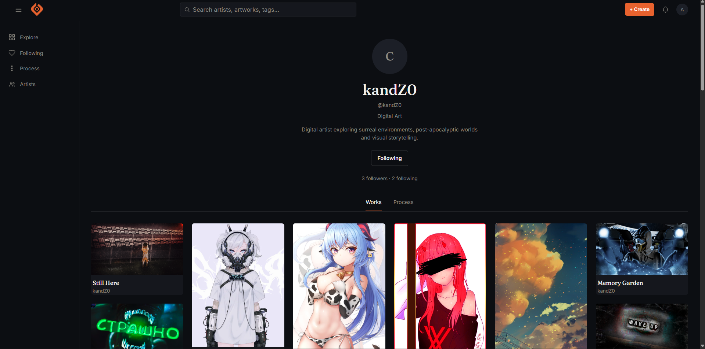

ArtPlatform
Самостоятельно разработанная платформа для цифровых художников, сфокусированная на публикации работ, социальном взаимодействии и демонстрации полного процесса создания арта.

01. Концепция и проблематика
Большинство современного портфолио-сервисов фокусируются только на финальном результате, полностью скрывая трудоёмкий процесс и технику автора. ArtPlatform был создан, чтобы дать авторам удобный инструмент демонстрации как итогового произведения, так и пошаговой истории его создания.
02. Ключевой функционал
Process Passport
Интерактивный таймлайн процесса, позволяющий наглядно прикреплять этапы работы.
Социальный граф
Профили пользователей, система подписок, лайки, комментарии и уведомления.
Explore & Discovery
Удобная галерея без лишнего визуального шума для комфортного просмотра изображений высокое разрешения.
Логика Process Passport
Как устроена визуализация поэтапного процесса работы:
03. Интерфейс системы

